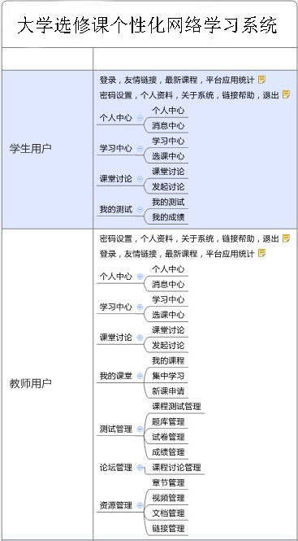

联机帮助
本软件系统名称为“大学选修课个性化网络学习系统” ，该软件系统通过 课程选择、课程学习、课程测试、课程辅导等功能实现选修课程的网上学习，通过课程统计、教务管理等功能实现了课程的网络化管理。本软件还适用于
技术培训、进修学习等其他应用的实现，包括学习过程、测试考核过程、辅导过程以及管理过程等。 同时，本系统具有
课程个性化推荐功能和界面皮肤偏好设置功能，系统的主要用户为学生、教师、教务管理员以及系统管理员，分别具有的功能如图1-1、1-2、1-3所示：

图 1-1 学习平台学生、教师部分功能结构
图 1-2 学习平台教务管理员部分功能结构

图 1-3 学习平台系统管理员部分功能结构
系统整体使用流程图1-4所示：
图 1-4 系统整体使用流程
2.用户公用操作
所有未登录用户都能够完成查看首页信息和登录、获取联机帮助以及获取系统信息等功能，所有已登录用户还能够完成恢复账号和密码、重置密码以及修改个人资料等功能。
2.1查看首页信息及系统登录
本系统默认设置四种登录用户：学生、教师、教务管理员、系统管理员。认识系统主界面的登录窗口是使用系统的第一步，登录时采用管理员提供的用户名和密码在左边的登录框登录即可。为了保证系统的安全性，登录时设置了验证码，为4个字符，不区分大小写，登录时必须输入。系统首页还包括友情链接、最新课程、平台应用统计等模块。系统主界面如图2-1所示：
图 2-1 系统未登录主界面
2.2查看首页信息及系统登录
首页界面中用户登录模块有“忘记密码”，即提供找回密码功能。用户在丢失密码后可以通过这种方式重置密码，以便于忘记密码的用户能继续以原来的账号访问系统，同时也为管理上提供了方便。
图 2-2 系统“忘记密码”界面